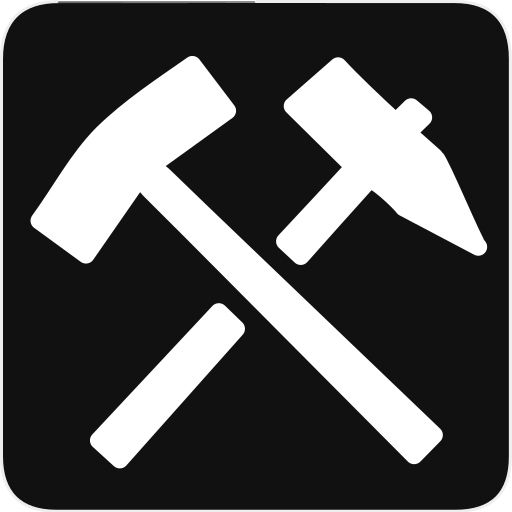
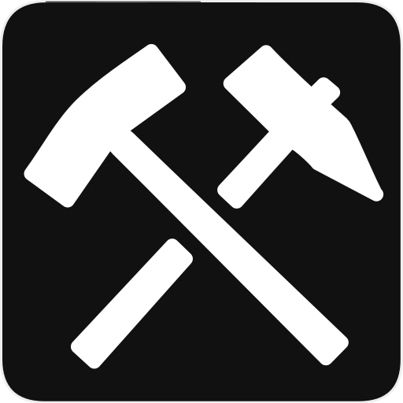

Mina del lago
 

Los tipos de gemas que se pueden encontrar dentro de las rocas de la mina del lago han aumentado en la nueva versión de Friends of Mineral Town. Las novedades en esta versión del juego son Aguamarina, Granate, Jade, Zafiro y Turquesa.
| Nombre | Precio de venta | Niveles de mina |
|---|---|---|
| Restos de mineral | 1 Gramo | Niveles 1 al 49, 51 al 99, 101 al 149 y del 151 al 199 |
| Turquesa | 50 Gramo | Niveles 1 al 49, 51 al 99, 101 al 149, 151 al 199 y del 201 al 255 |
| Piedra de luna | 55 Gramo | Niveles que terminan en 8 y en el nivel 255 |
| Rosa del desierto | 60 Gramo | Niveles que terminan en 9 y en el nivel 255 |
| Aguamarina | 60 Gramo | Niveles 1 al 49, 51 al 99, 101 al 149, 151 al 199 y del 201 al 255 |
| Amatista | 60 Gramo | Niveles 1 al 49, 51 al 99, 101 al 149, 151 al 199 y del 201 al 255 |
| Jade | 62 Gramo | Niveles 1 al 49, 51 al 99, 101 al 149, 151 al 199 y del 201 al 255 |
| Ágata | 62 Gramo | Niveles 1 al 49, 51 al 99, 101 al 149, 151 al 199 y del 201 al 255 |
| Fluorita | 65 Gramo | Niveles 1 al 49, 51 al 99, 101 al 149, 151 al 199 y del 201 al 255 |
| Peridoto | 68 Gramo | Niveles 1 al 49, 51 al 99, 101 al 149, 151 al 199 y del 201 al 255 |
| Topacio | 70 Gramo | Niveles 1 al 49, 51 al 99, 101 al 149, 151 al 199 y del 201 al 255 |
| Granate | 75 Gramo | Niveles 1 al 49, 51 al 99, 101 al 149, 151 al 199 y del 201 al 255 |
| Zafiro | 75 Gramo | Niveles 1 al 49, 51 al 99, 101 al 149, 151 al 199 y del 201 al 255 |
| Rubi | 75 Gramo | Niveles 1 al 49, 51 al 99, 101 al 149, 151 al 199 y del 201 al 255 |
| Esmeralda | 80 Gramo | Niveles que terminan en 5 y del nivel 201 al 255 |
| Diamante | 100 Gramo | Niveles 10, 20, 30, 70, 90, 110, 130, 170, 190 y del nivel 201 a 255 |
| Diamante rosa | 50 Gramo | Niveles 30, 70, 90, 110, 130, 170, 190, 210, 220, 230, 240 y del nivel 250 al 255 |
| Alejandrita | 20.000 Gramo | Nivel 50, 100, 150, 200, 210, 220, 230, 240 y del nivel 250 al 255 |
Alejandrita cambiará de color ya sea que estés adentro (rojo) o afuera (verde). Lo único que puedes encontrar en los niveles 50, 100, 150 y 200 es Alejandrita, pero la gema es tan rara que es posible que solo encuentres una pieza o posiblemente ninguna. Convenientemente, el ascensor de la mina del lago se detiene en los niveles de Alejandrita. El nivel de ascensor más fácil para buscar Alejandrita es el nivel 100, donde no se encontrarán trampas molestas que interrumpan su búsqueda de la escurridiza gema.
Otros elementos de la mina de la cascada
Hay algunas cosas especiales y objetos que puedes conseguir en esta mina y una vez conseguido no volveran aparecer, dichos objetos son:
| Niveles de peligro |
Hay menos niveles habilitados para trampas en la mina del lago que en la mina de la cascada, pero la posibilidad de tropezar con una trampa oculta aumenta a medida que avanzas en la mina.
Tendrás que moverte un piso a la vez en muchos puntos durante tu descenso a la mina, así que lleva mucha comida para recuperar tu resistencia. |
|---|---|
| Lago de pesca | En el piso 9 encontrarás una habitación con una gran masa de agua. Este lago subterráneo es donde puedes pescar a uno de los 7 peces rey del juego. |
| Balla de poder | Puedes encontrar una de estas frutas que aumentan la resistencia en el suelo en el nivel 19. |
| Estatuas |

Hay una estatua decorativa escondida en la tierra dentro de la mina del lago. Puedes encontrar la estatua de Kappa escondida en la tierra en los niveles del 101 al 120. La estatua se puede colocar en el estante de trofeos dentro de tu granja, aunque no aporta ningún beneficio y no se puede vender. |
| Joyas de Kappa | Las 9 joyas están ubicados en las rocas de los niveles 0 (la entrada), 40, 60, 80, 120, 140, 160, 180 y 255. |
| Herramientas malditas |
Antes de que aparezcan dentro de la tierra en niveles específicos de la mina, necesitarás remodelar tus 6 herramientas agrícolas (azada, martillo, regadera, hoz, caña de pescar y hacha) al nivel de Mithril. Luego podrás cavar en busca de las herramientas malditas en los siguientes pisos:
No encontrarás ningún obstáculo en los niveles en los que una herramienta maldita tiene una posibilidad aleatoria de aparecer. Si estás buscando estos elementos especiales, la mejor manera de manejar la aleatoriedad es guardar el juego en el nivel anterior al nivel de la herramienta maldita y usar la escalera inferior de un solo nivel para llegar a la ubicación de la herramienta maldita. De esa manera, si no localizas la herramienta, puedes volver a cargar tu partida guardada y volver a intentarlo. |